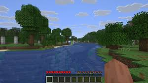
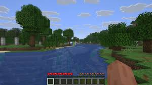
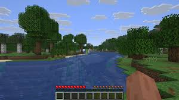

Minecraft to jedna z najpopularniejszych gier komputerowych na świecie. Została wydana przez studio Mojang i pozwala graczom na niemal nieograniczoną kreatywność.
Gra Minecraft została stworzona przez Markusa Perssona, znanego jako Notch. Pierwsza wersja gry pojawiła się w 2009 roku i szybko zdobyła popularność.
Minecraft oferuje otwarty świat zbudowany z bloków, które gracz może niszczyć i tworzyć od nowa. Dzięki temu każdy świat jest unikalny.
W grze dostępne są różne tryby rozgrywki, takie jak tryb przetrwania, kreatywny czy hardcore. Każdy z nich oferuje inne wyzwania.
Minecraft jest wykorzystywany nie tylko do zabawy, ale także w edukacji. Uczy logicznego myślenia, planowania oraz podstaw programowania.
Dzięki ogromnej społeczności i modom, Minecraft wciąż się rozwija i przyciąga nowych graczy na całym świecie.

| Element | Informacja |
|---|---|
| Producent | Mojang |
| Rok wydania | 2011 |
| Gatunek | Sandbox |
| Platformy | PC, PS, Xbox, Mobile |